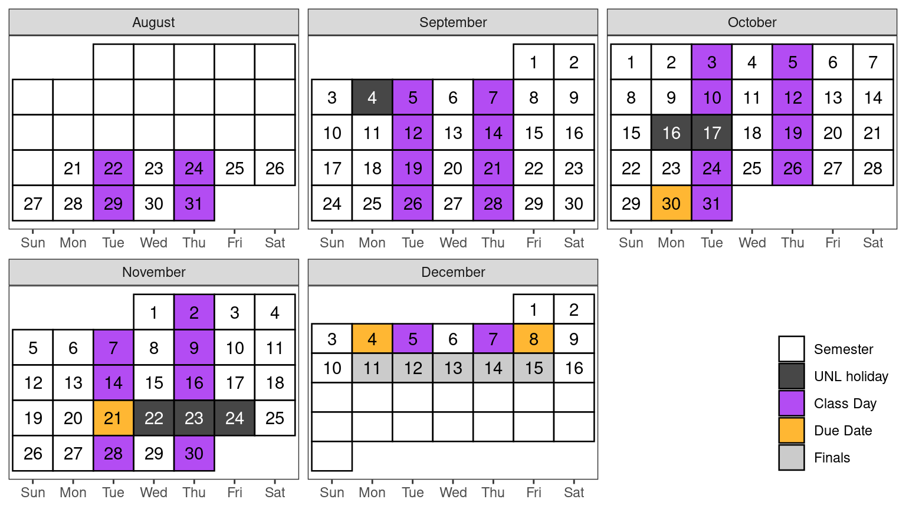

Stat 850: Computing Tools for Statisticians
Course Description
Introductions to statistical computing packages and document preparation software. Topics include: graphical techniques, data management, Monte Carlo simulation, dynamic document preparation, presentation software.
Course Goals
- Learn how to use R and/or Python for data analysis, data processing, and data visualization.
- Become familiar with the process, techniques, and goals of exploratory data analysis.
- Create, assess, and debug code effectively.
- Use online resources to find software to perform a task, comparing approaches taken by competing programs.
- Read error messages, find related problems in online forums, and isolate the conditions necessary to generate the error.
- Generate minimum working examples or reproducible examples of errors in order to ask for help effectively.
- Communicate statistical results using reproducible, dynamic tools. Understand the importance of reproducibility in scientific computation.
Course Objectives
(what you should be able to do at the end of this course)
Clean and format the data appropriately for the intended analysis or visualization method. (Goals: 1)
Explore a data set using numerical and visual summaries, developing questions which can be answered using statistics. (Goals: 1, 2)
Evaluate methods or software to assess relevance to a problem. Compare similar options to determine which are more appropriate for a given application (Goals: 1, 3)
Test and debug software, using the following sequence: (Goals: 3, 4)
- Reproduce the error in a new environment,
- Create a minimal reproducible example,
- Research the error message and evaluate online resources for relevance,
- Ask for help, describing the error or problem appropriately.
Document the data, methods, and results of an analysis using reproducible methods. (Goals: 1, 2, 4)
Textbook
In keeping with the principles of this course, any course materials I develop will be made available on GitHub, in the (continuously evolving) course textbook. The book is laid out with the same structure as the course. In order to avoid duplicating content available elsewhere, where it is appropriate, I will link to relevant material available on other sites. This makes the course easier to maintain, but it also ensures you get the most relevant and up to date instructions.
In addition, you may find it useful to reference some of the following resources that I have consulted while assembling the textbook. Most are available online for free, though some require an institutional email address.
* Available online for free if you register with your UNL email address.
Assessment/Grading
| Assignments | Weight |
|---|---|
| Weekly Homework | 50% |
| Reading Assignments/Participation | 10% |
| Textbook Quizzes | 10% |
| Project | 30% |
Lower bounds for grade cutoffs are shown in the following table. I will not “round up” grades at the end of the semester beyond strict mathematical rules of rounding.
| Letter grade | X + | X | X - |
|---|---|---|---|
| A | 97 | 94 | 90 |
| B | 87 | 84 | 80 |
| C | 77 | 74 | 70 |
| D | 67 | 64 | 61 |
| F | <61 |
Interpretation of this table:
- A grade of 85 will receive a B.
- A grade of 77 will receive a C+.
- A grade of 70 will receive a C-.
- Anything below a 61 will receive an F.
Class Schedule & Topic Outline
This schedule is tentative and subject to change. Students are expected to read the corresponding textbook chapter (linked in Canvas) prior to coming to class.
| Date | Time | Topic |
|---|---|---|
| Aug 22, Aug 24 | Exploring the Toolbox | |
| Aug 29, Aug 31 | Introduction to Programming, Basic Variable Types | |
| Sep 5, Sep 7 | Data and Control Structures | |
| Sep 12, Sep 14 | Programming with Data | |
| Sep 19, Sep 21 | Reading and Exploring Data | |
| Sep 26, Sep 28 | Data Cleaning and Manipulation | |
| Oct 3, Oct 5 | Data Transformations | |
| Oct 10, Oct 12 | Graphics | |
| Oct 19 | Debugging | |
| Oct 24, Oct 26 | Reproducibility and Professional Communication | |
| Oct 30 | 8pm | Project Proposal Due |
| Oct 31, Nov 2 | Simulation | |
| Nov 7, Nov 9 | Interactive Graphics | |
| Nov 14, Nov 16 | Special Topics | |
| Nov 21 | 8pm | Project Draft Due |
| Nov 28, Nov 30 | Project Work Day | |
| Dec 4 | 12pm | Project Presentation Due |
| Dec 5, Dec 7 | High Performance Computing | |
| Dec 8 | 12pm, 8pm | Project Report & Peer Reviews Due |
Course Policies
Homework
Approximately 8-12 homework assignments will be made over the course of the semester. You will have one week to work on each of the assignments. The only way to learn statistics is to practice working problems, and homework is therefore an essential part of the course. Homework must be submitted in the file format specified (usually quarto documents in a github repository), and should run or compile as submitted.
Hypothes.is Assignments
Approximately weekly reading will be assigned using Hypothes.is, which allows you to annotate the reading with questions and comments and to see your classmates comments. These reading assignments are intended to expose you to a wide array of topics about programming, statistics, data science, ethics, and reproducibility.
Note: Hypothes.is is something I haven’t tried before; I’ve added it to replace online discussions about the same reading materials. I’m hopeful that it will be less awkward than discussion boards, but we will re-evaluate the use of this tool during the semester to ensure that it works for a majority of the class.
Hypothes.is assignments will be due weekly on Fridays at 8pm unless otherwise announced.
Textbook Quizzes
This class uses a flipped classroom model, which assumes that you read the material and/or watch the videos before class so that you are prepared to apply the material during in-class activities. To ensure that you are doing the reading and thus are prepared for class, there are low-stakes quizzes to accompany most textbook chapters; these quizzes will highlight some important items to remember from each chapter.
These quizzes will be due at 12pm on class days (if there are multiple textbook chapters assigned for the week, one quiz may be due on Tuesday and one on Thursday, depending on how sequential the material is).
General Evaluation Criteria
In every assignment, discussion, and written component of this class, you are expected to demonstrate that you are intellectually engaging with the material. I will evaluate you based on this engagement, which means that technically correct but low effort answers which do not demonstrate engagement or understanding will receive no credit.
When you answer questions in this class, your goal is to show that you either understand the material or are actively engaging with it. If you did not achieve this goal, then your answer is incomplete, regardless of whether or not it is technically correct. This is not to encourage you to add unnecessary complexity to your answer - simple, elegant solutions are always preferable to unwieldly, complex solutions that accomplish the same task.
While this is not an English class, grammar and spelling are important, as is your ability to communicate technical information in writing; both of these criteria will be used in addition to assignment-specific rubrics to evaluate your work.
Late Policy
Late assignments will be accepted only under extenuating circumstances, and only if you have contacted me prior to the assignment due date and received permission to hand the assignment in late. I reserve the right not to grade any assignments received after the assignment due date.
Attendance
You are expected to attend class and participate in online discussions. Consistent, repeated failure to attend class or actively participate in the online portions of the course will affect the participation portion of your grade.
If you are feeling ill, please do not come to class. Instead, review the material and work on the homework assignment, and then schedule an appointment with me to meet virtually. Feel free to contact me and let me know if you are having trouble - it is much easier to communicate early and often than to fix problems that arise later in the semester.
Expectations
You can expect me to:
- reply to emails within 48 hours during the week (72 hours on weekends)
- be available in class to assist with assignments
- be available by appointment for additional help or discussion
I expect you to:
- Read the module material and homework assignment before coming to class
- Engage with the material and your classmates during class
- Seek help when you do not understand the material
- Communicate promptly if you anticipate that you will have trouble meeting deadlines or participating in a portion of the course.
- Do your own troubleshooting before contacting me for help (and mention things you’ve already tried when you do ask for help!)
- Be respectful and considerate of everyone in the class
Make Mistakes!
Programming is the process of making a series of silly or stupid mistakes, and then slowly fixing each mistake (while adding a few more). The only way to know how to fix these mistakes (and avoid them in the future) is to make them. (Sometimes, you have to make the same mistake a few dozen times before you can avoid it in the future). At some point during the class, you will find that you’ve spent 30 minutes staring at an error caused by a typo, a space, a parenthesis in the wrong place. You may ask for help debugging this weird error, only to have someone immediately point out the problem… it is always easier to see these things in someone else’s code. This is part of programming, it is normal, and you shouldn’t feel embarrassed or sorry (unless you put no effort into troubleshooting the problem before you asked for help)
If you manage to produce an error I haven’t seen before, then congratulations. You have achieved something special, and that achievement should be celebrated. Each new and bizarre error is an opportunity to learn a bit more about the programming language, the operating system, or the interaction between the two.
Inclement Weather
If in-person classes are canceled, you will be notified of the instructional continuity plan for this class by Canvas Announcement. In most circumstances where there is power in the Lincoln area, we will continue to hold class via Zoom.
Academic Integrity and Class Conduct
You will be engaging with your classmates and me through in-person discussions and collaborative activities. It is expected that everyone will engage in these interactions civilly and in good faith. Discussion and disagreement are important parts of the learning process, but it is important that mutual respect prevail. Individuals who detract from an atmosphere of civility and respect will be removed from the conversation.
Students are expected to adhere to guidelines concerning academic dishonesty outlined in Article III B.1 of the University’s Student Code of Conduct. The Statistics Department academic integrity and grade appeal policy is available here.
You must be able to explain how the logic works for any code you turn in. This means that code you obtained from e.g. StackOverflow or ChatGPT is fine to use if you can explain it and modify it for the purposes of this class, but if you cannot explain your code you will not get credit for the assignment. This is in line with what is generally considered acceptable behavior in programming - reuse is fine (subject to the code’s license) but you must be able to fully explain and modify any code you did not write yourself. I reserve the right to replace the grade on any assignment with an oral exam over that assignment’s content and key concepts.
Required University Information
See .